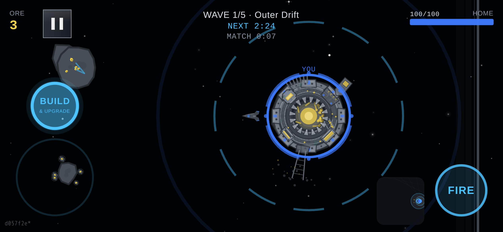
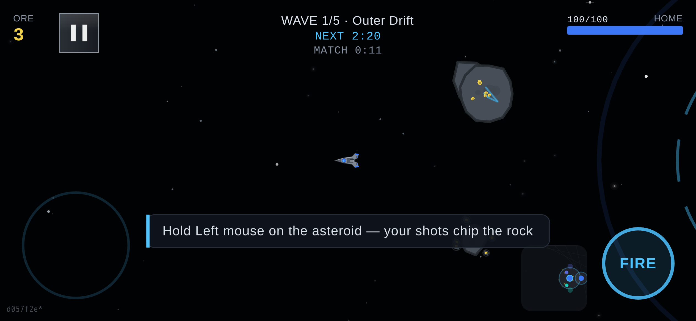
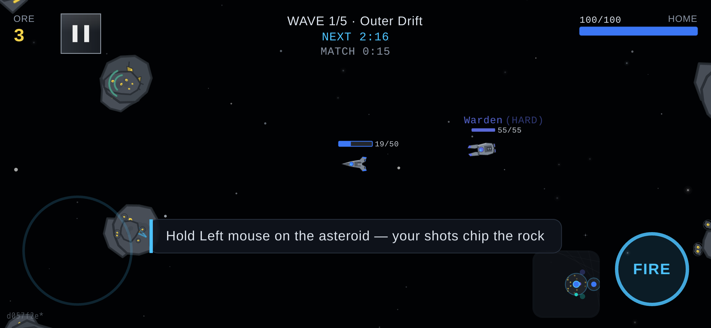
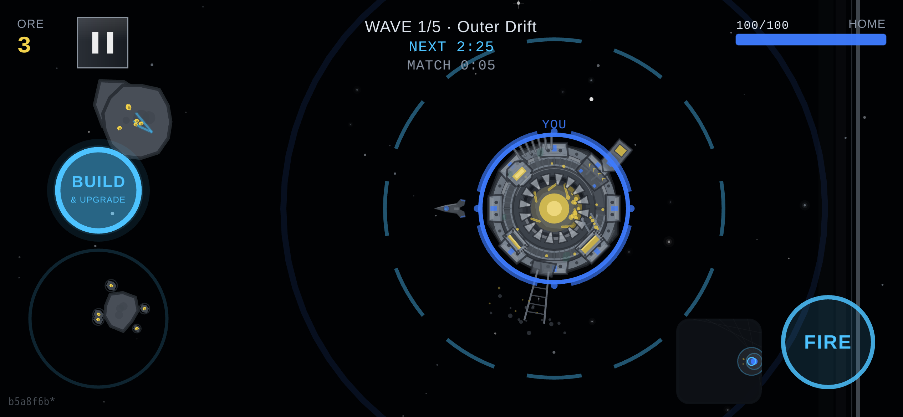
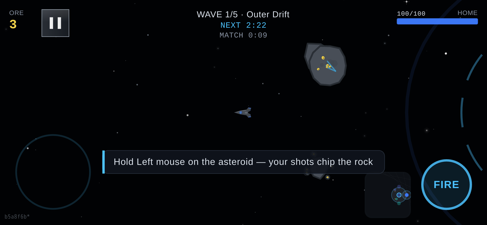
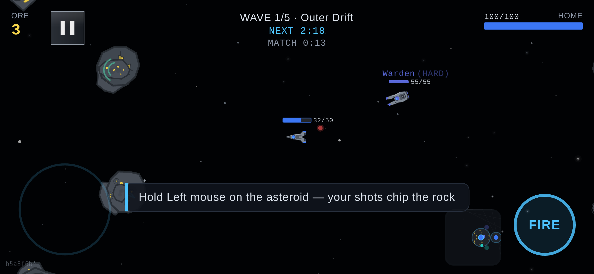

Plasma Reef — one straight flight, the real build, before and after (a0-07b)
the most object-like sky, on oval, landscape phone 844×390 at dpr 3, ?debug=1 with the sim running:
the ship is flown in a straight line on a held key (west, whichever side of
this board has room) and a frame is taken at the start, 300 u along and 600 u along. Everything in the world moves a full 1 px per unit flown; the far star field moves
0.10 of that. The question is only what the sky does between the three frames — and whether it
stays with the stars or with the ship.
BEFORE — origin/main, parallax 0.05 the build the developer reported

start — ship at world x = 2820 u (0 u flown)

middle — ship at world x = 2362 u (458 u flown)

end — ship at world x = 2093 u (727 u flown)
the same three frames, 2x on the open band between the HUD bars (x 300-720, y 85-200) — the sky is a whisper by design, so it needs the zoom
start
middle
end
AFTER — this branch, parallax 0.085 the sky travels with the far star field

start — ship at world x = 2820 u (0 u flown)

middle — ship at world x = 2384 u (436 u flown)

end — ship at world x = 2067 u (753 u flown)
the same three frames, 2x on the open band between the HUD bars (x 300-720, y 85-200) — the sky is a whisper by design, so it needs the zoom